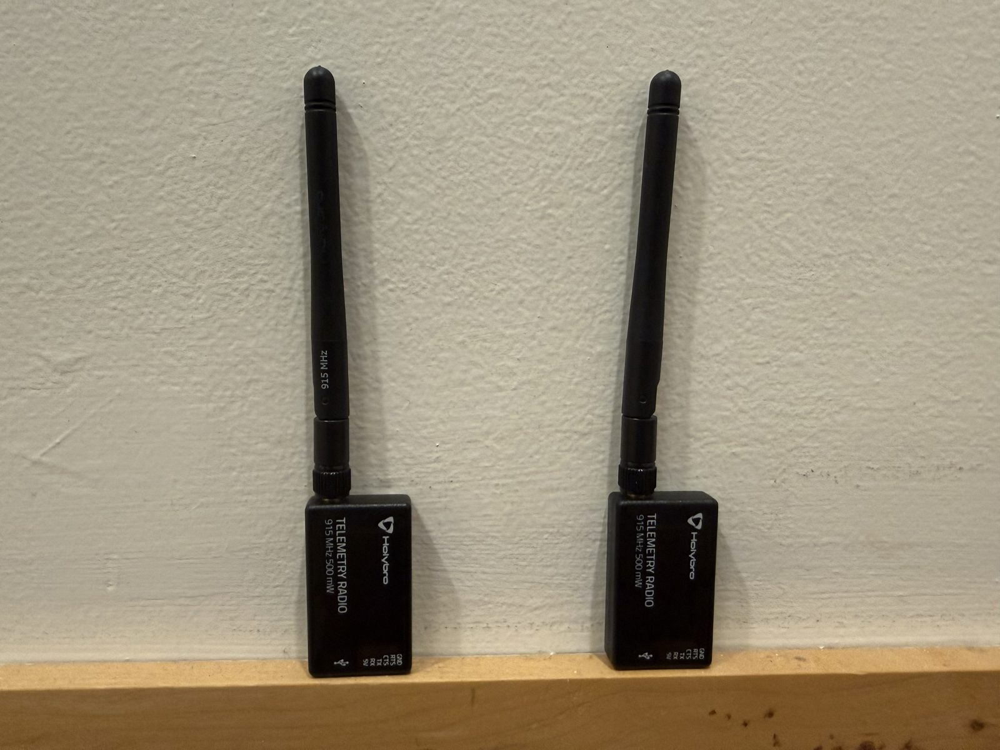
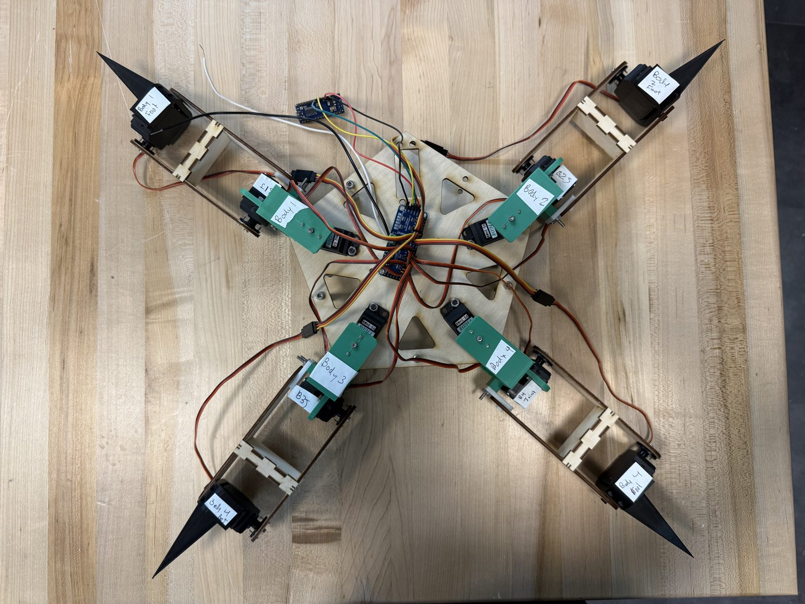

Formula SAE telemetry
Rebuilt the car's radio telemetry from ~3 to 100+ messages/sec, and modeled a 29.6 dB link margin at 1 km for the new ground station.

Vine Robotics
Pressure-sensing board and C firmware on a Raspberry Pi Pico, plus a 6-channel steering board design for a soft vine robot.

Rocky Animatronic (PIE)
12-servo walking robot in C++ on an Arduino Nano. Found the ~9.6 A servo stall current was too much for our 3 A converter and switched to a servo driver.

Thruster modeling (OPEL)
MATLAB and COMSOL models of Hall effect thrusters: about 15 mN of thrust and 1,630 s Isp predicted for the MK5.